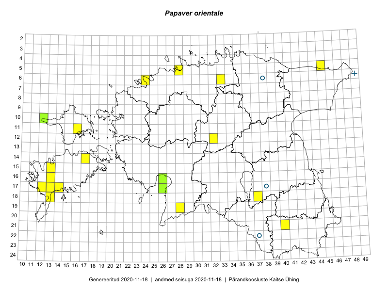

Papaver orientale
Uuendatud: 2016-12-01
Kaardile koondatud taksonid: Papaver orientale L.

Kaart põhineb 12 kirjel.
Viited andmebaasikirjetele
- Rein Kalamees, Kersti Püssa: 2015-06-07: 06-33: GPS punkt
- Triin Reitalu, Mari Reitalu: 2015-04-19: 17-13: GPS punkt
- Karin Kikas, Elle Rajandu: 2015-04-22: 18-37: ala
- Timo Luhamäe, Meeli Mesipuu: 2015-06-11: 12-32: GPS punkt
- Meeli Mesipuu: 2015-06-01: 05-45: GPS punkt
- Meeli Mesipuu, Timo Luhamäe: 2015-05-28: 11-16: ala
- Meeli Mesipuu, Timo Luhamäe: 2015-05-27: 10-12: GPS punkt
- Meeli Mesipuu: 2016-05-05: 14-17: GPS punkt
- Peedu Saar, Tarmo Niitla: 2016-06-17: 21-40: GPS punkt
- Peedu Saar, Ott Luuk: 2016-06-09: 19-28: GPS punkt
- Timo Luhamäe, Meeli Mesipuu: 2015-05-28: 11-16: GPS punkt
- Elle Rajandu, Karin Kikas: 2015-04-22: 18-37: ala